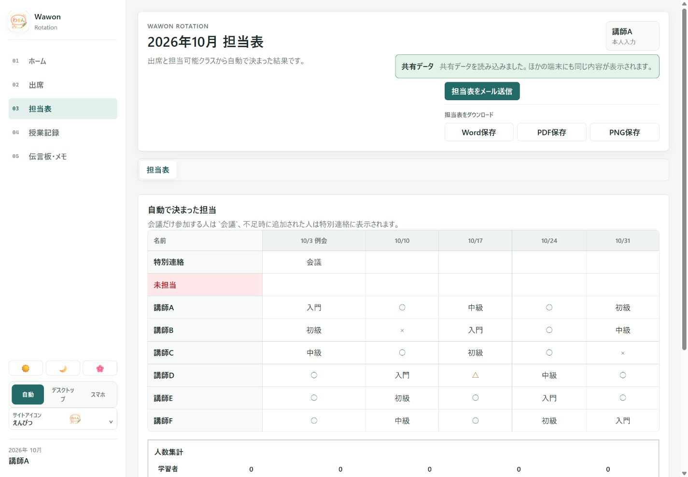
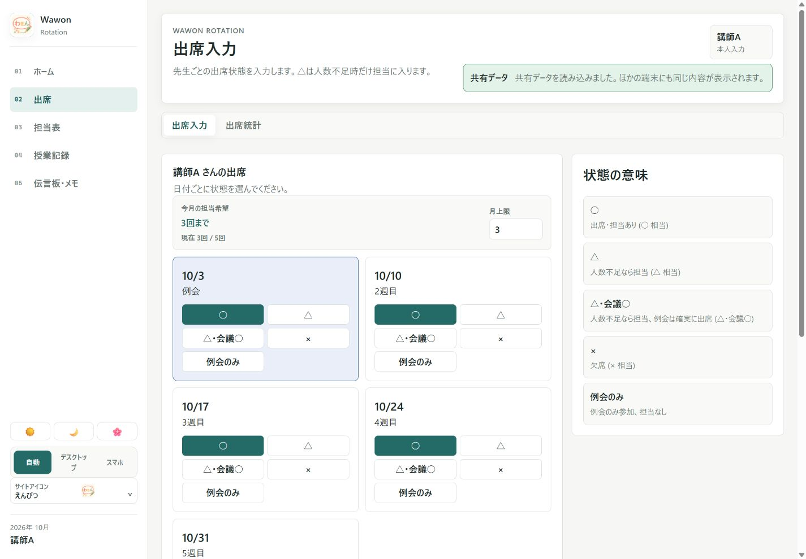

人のために作ったもの実アプリの隔離QA画面（2026年9月30日）。講師名・日付・担当はすべて架空のテストデータで、実運用の予定には接続していません。 実アプリの隔離QA画面（2026年9月30日）。実データを読み込まず、ローカルの架空データだけで表示しています。
日本語教室ローテーションWebシステム
先生方の予定を集め、条件に合わせて担当表を作るまでの手間を減らしたい。AIの開発支援を活用し、入力・調整・共有をつなぐWebシステムを制作しました。


Why I started
取り組んだきっかけ
複雑な調整ほど、入力する人の操作は簡単に。
毎月の担当決めでは、出席可否だけでなく担当クラス、月の回数、個別の事情を手作業で確認していました。
What I cared about
大切にしたこと
- 入力の負担
- 複雑な条件は管理側に寄せ、回答側は選択中心にする。
- 確認
- 自動生成を最終判断にせず、管理者が確認・調整できるようにする。
Results & learning
結果と学んだこと
予定入力から担当表の生成・確認、共有までをWeb上で扱えるようにしました。相手の事情を具体的な要件に落とし込む経験を得ました。
相手の事情を聞くことと、その事情を無理なく入力できる画面にすることは、両方が必要だと学びました。
自分の担当と、生成AIの活用
利用者の条件の聞き取り、入力・管理画面の設計、実装と運用上の改善。
生成AIを含む開発支援を利用しつつ、利用者の条件の整理、使いやすさの判断、動作確認は自分で行いました。
取り組みの詳細
事情を丁寧に整理する
担当可能なクラスや月の担当回数など、利用者の希望を条件に整理しました。
操作を役割で分ける
先生はスマートフォンで○・△・×を選び、複雑な設定や調整は管理者が扱う形にしました。
共有と運用を支える
担当表の確認、代替候補、共有用テキストや出力まで含め、実際の運用に合わせて改善しました。
掲載資料と現在の課題
掲載画面の担当者と予定はすべて架空です。実際の教室のデータベースや管理画面には接続していません。
実際のReactフロントエンドを隔離QAで起動した画面。架空の先生と日程を用いており、実際の配置結果ではありません。